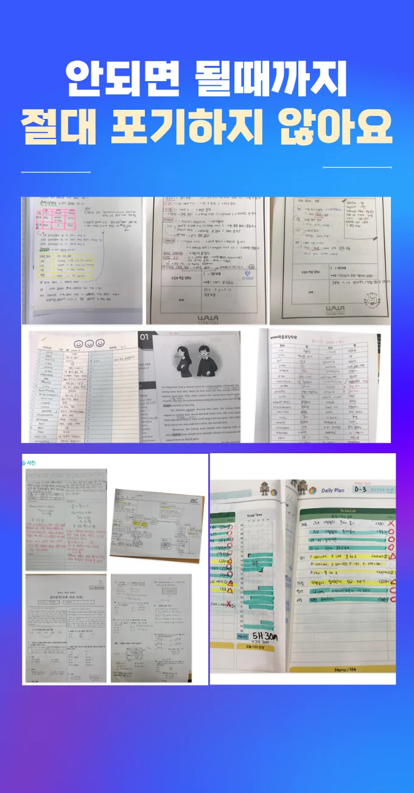

동춘 국영수과학원
동춘 국영수과학원
이는 단순한 독해를 넘어서 문맥 속에서 의미를 해석하고 연결하는 능력을 강화하는 작업이며, 문제를 푸는 속도가 점차 빨라지는 직접적인 원인이 된다. 동춘 국영수과학원은 실패 경험을 학습 성장의 기회로 인식하도록 돕는 동시에, “Help students to reflect on mistakes”와 같은 to부정사형 문장을 교구에 삽입해 의도적인 사고 전환을 유도한다. 한 예로, 일주일 동안 '수학 개념 정리 3장 완성'이라는 목표를 친구와 공유한 학생은 단독으로 학습할 때보다 70% 이상의 확률로 목표를 달성하는 경향을 보인다. 오전에는 창밖으로 들어오는 부드러운 햇빛이 책상 위를 밝히며 집중력을 돕지만 오후가 되면 그 빛은 차츰 서늘한 그림자로 바뀌고, 아이의 집중력도 함께 무너진다. 학생이 자기주도적으로 사고를 펼치게 만드는 데 매우 효과적입니다. 동춘 국영수과학원은 이러한 전반적인 접근은 학습자가 스스로 학습 환경을 주도하고, 개인 특성에 맞는 학습 속도를 스스로 조절할 수 있도록 돕는다. 학습 목표는 단기오늘까지, 중기이번 달까지, 장기학기 말까지로 명확히 구분하여 설정함으로써 성취 욕구를 이끌어내야 하며, 각 목표는 꼭 측정 가능한 형태여야 한다.